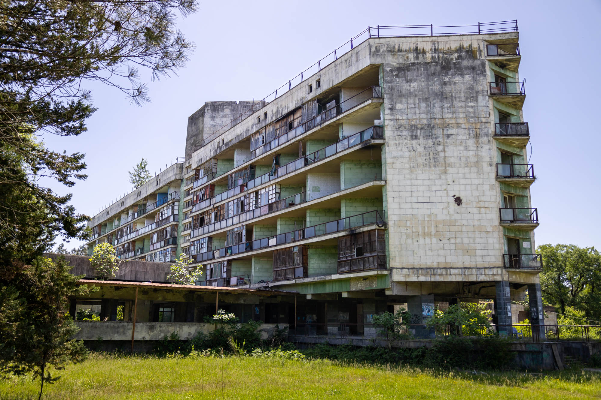
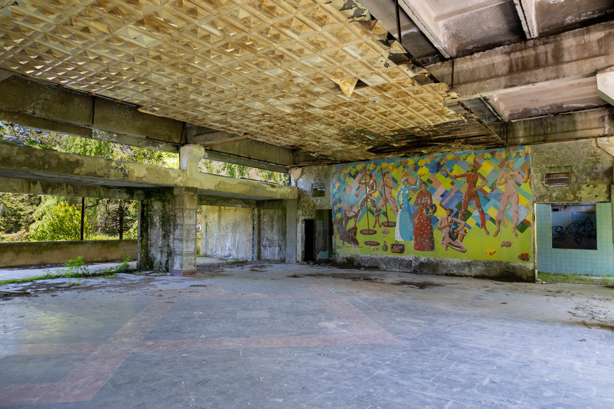
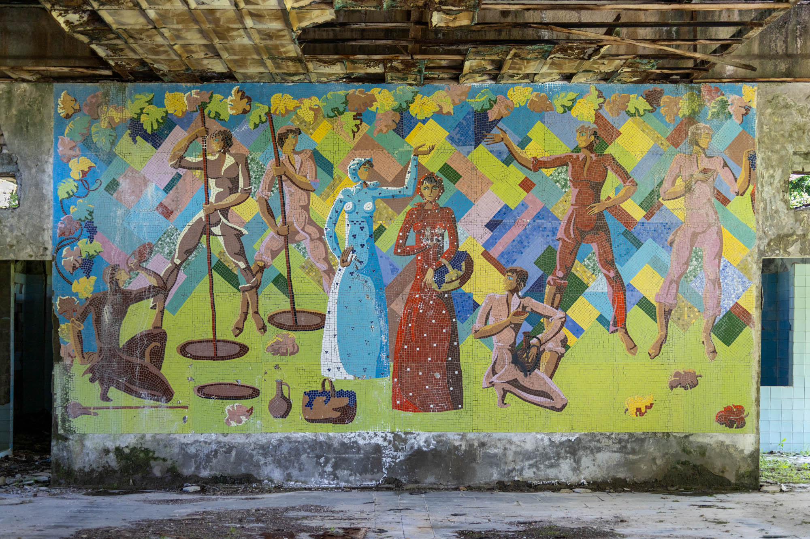
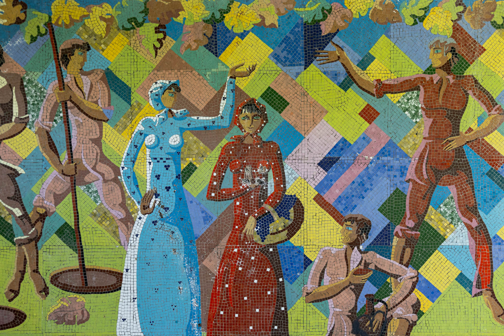

On the edge of Tskaltubo stands a half-occupied, half run-down former hotel building. Originally constructed for the Ministry of Internal Affairs of Soviet Georgia (Aia), it was one of many hotels and spas developed to take advantage of the area's natural radon-carbonate mineral springs.


Following the fall of the Soviet Union, many of Tskaltubo's hotels and spas fell into disrepair and have been abandoned ever since. In the case of Hotel Aia, it quickly gained a second life housing Internally Displaced Persons (IDPs) from the 1992–1993 Georgia–Abkhazia conflict. What was intended as temporary accommodation has now persisted for over three decades.

Against this historical backdrop, visiting Hotel Aia’s remarkably well-preserved vineyard mosaic should be approached with respect for the local community. Visitors are advised not to venture beyond the unoccupied ground floor, out of consideration for the residents living there. Fortunately, the mosaic—located in the building’s former restaurant—is situated near the entrance. It beautifully illustrates Georgia’s rich tradition of wine harvesting, winemaking, celebration, and cultural heritage.
